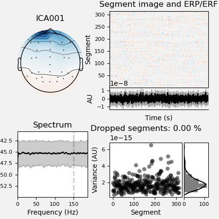
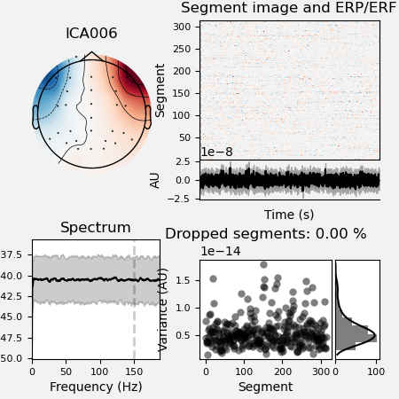
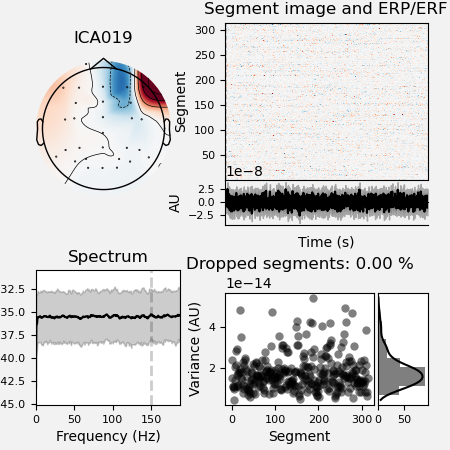

Note
Click here to download the full example code
01. Preprocess EEG data¶
The preprocessing pipeline pipeline runs the ICA algorithm for an automatic removal of eyes and heart related artefacts. A report is automatically generated and can be used to correct and/or fine-tune the correction in each subject.
# Authors: Annalisa Pascarella <a.pascarella@iac.cnr.it>
# License: BSD (3-clause)
# sphinx_gallery_thumbnail_number = 2
Import modules¶
The first step is to import the modules we need in the script. We import mainly from nipype and ephypype packages.
import json
import pprint # noqa
import os
import os.path as op
import nipype.pipeline.engine as pe
from ephypype.nodes import create_iterator, create_datagrabber
from ephypype.pipelines.preproc_meeg import create_pipeline_preproc_meeg
from ephypype.datasets import fetch_erpcore_dataset
Let us fetch the data first. It is around 90 MB download.
import ephypype
home_dir = op.expanduser("~")
base_path = op.join(home_dir, 'workshop')
try:
os.mkdir(base_path)
except OSError:
print("directory {} already exists".format(base_path))
data_path = fetch_erpcore_dataset(base_path)
directory /home/pasca/workshop already exists
Define data and variables¶
Let us specify the variables that are specific for the data analysis (the
main directories where the data are stored, the list of subjects and
sessions, …) and the variables specific for the particular pipeline
(downsampling frequency, EOG channels, cut-off frequencies, …) in a
json file.
(if it is does work, try to go on the github page, and right-click “Save As” on the Raw button)
# Read experiment params as json
params = json.load(open("params.json"))
pprint.pprint({'general parameters': params['general']})
data_type = params["general"]["data_type"]
subject_ids = params["general"]["subject_ids"]
NJOBS = params["general"]["NJOBS"]
session_ids = params["general"]["session_ids"]
# data_path = params["general"]["data_path"]
{'general parameters': {'NJOBS': 1,
'data_path': '',
'data_type': 'eeg',
'session_ids': ['N170'],
'subject_ids': ['016']}}
Read the parameters for preprocessing from the json file and print it
pprint.pprint({'preprocessing parameters': params["preprocessing"]})
l_freq = params["preprocessing"]['l_freq']
h_freq = params["preprocessing"]['h_freq']
down_sfreq = params["preprocessing"]['down_sfreq']
EoG_ch_name = params["preprocessing"]['EoG_ch_name']
ch_new_names = params["preprocessing"]['ch_new_names']
bipolar = params["preprocessing"]['bipolar']
montage = params["preprocessing"]['montage']
n_components = params["preprocessing"]['n_components']
reject = params["preprocessing"]['reject']
{'preprocessing parameters': {'EoG_ch_name': ['HEOG', 'VEOG'],
'bipolar': {'HEOG': ['HEOG_left', 'HEOG_right'],
'VEOG': ['VEOG_lower', 'Fp2']},
'ch_new_names': {'FP1': 'Fp1', 'FP2': 'Fp2'},
'down_sfreq': 256,
'h_freq': 150,
'l_freq': 0.1,
'montage': 'standard_1005',
'n_components': 28,
'reject': {'eeg': 0.00035, 'eog': 0.0005}}}
Specify Nodes¶
Before to create a workflow we have to create the nodes that define the workflow itself. In this example the main Nodes are
infosourceis a Node that just distributes valuesdatasourceis a DataGrabber Node that allows the user to define flexible search patterns which can be parameterized by user defined inputspreproc_eeg_pipelineis a Node containing the pipeline created bycreate_pipeline_preproc_meeg()
Infosource¶
The ephypype function create_iterator() creates the
infosource node that allows to distributes values: when we need to feed
the different subject names into the workflow we only need a Node that can
receive the input and distribute those inputs to the workflow.
infosource = create_iterator(['subject_id', 'session_id'],
[subject_ids, session_ids])
DataGrabber¶
Then we create a node to grab data. The ephypype function
create_datagrabber()
creates a node to grab data using DataGrabber in Nipype. The DataGrabber
Interface allows to define flexible search patterns which can be
parameterized by user defined inputs (such as subject ID, session, etc.).
In this example we parameterize the pattern search with subject_id and
session_id. The template_args in this node iterate upon the values in
the infosource node.
template_path = 'sub-%s/ses-%s/eeg/sub-%s*ses-%s*.set'
template_args = [['subject_id', 'session_id', 'subject_id', 'session_id']]
datasource = create_datagrabber(data_path, template_path, template_args)
Preprocessing pipeline¶
Ephypype creates for us a pipeline which can be connected to these nodes we
created. The preprocessing pipeline is implemented by the function
create_pipeline_preproc_meeg() thus to
instantiate this pipeline node, we import it and pass our parameters to it
preproc_workflow = create_pipeline_preproc_meeg(
data_path, pipeline_name="preproc_eeg_pipeline",
l_freq=l_freq, h_freq=h_freq, n_components=n_components, reject=reject,
EoG_ch_name=EoG_ch_name, data_type=data_type, montage=montage,
bipolar=bipolar, ch_new_names=ch_new_names)
*** main_path -> /home/pasca/workshop/ERP_CORE ***
Specify Workflows and Connect Nodes¶
Now, we create our workflow and specify the base_dir which tells nipype
the directory in which to store the outputs.
preproc_pipeline_name = 'preprocessing_workflow'
main_workflow = pe.Workflow(name=preproc_pipeline_name)
main_workflow.base_dir = data_path
We then connect the nodes two at a time. First, we connect the two outputs
(subject_id and session_id) of the Infosource node to the
DataGrabber node. So, these two nodes taken together can grab data
main_workflow.connect(infosource, 'subject_id', datasource, 'subject_id')
main_workflow.connect(infosource, 'session_id', datasource, 'session_id')
Similarly, for the inputnode of the Preprocessing pipeline. Things will become clearer in a moment when we plot the graph of the workflow.
main_workflow.connect(infosource, 'subject_id',
preproc_workflow, 'inputnode.subject_id')
main_workflow.connect(datasource, 'raw_file',
preproc_workflow, 'inputnode.raw_file')
Run workflow¶
After we have specified all the nodes and connections of the workflow, the
last step is to run it by calling the run method. It’s also possible to
generate static graph representing nodes and connections between them by
calling write_graph method.
main_workflow.write_graph(graph2use='colored') # optional
'/home/pasca/workshop/ERP_CORE/preprocessing_workflow/graph.png'
Take a moment to pause and notice how the connections here correspond to how we connected the nodes.
import matplotlib.pyplot as plt # noqa
img = plt.imread(op.join(data_path, preproc_pipeline_name, 'graph.png'))
plt.figure(figsize=(6, 6))
plt.imshow(img)
plt.axis('off')
(-0.5, 336.5, 498.5, -0.5)
Finally, we are now ready to execute our workflow.
main_workflow.config['execution'] = {'remove_unnecessary_outputs': 'false'}
# Run workflow locally on 1 CPU
main_workflow.run(plugin='LegacyMultiProc', plugin_args={'n_procs': NJOBS})
<networkx.classes.digraph.DiGraph object at 0x7feb78bab4f0>
Results¶
The output is the preprocessed data stored in the workflow directory
defined by base_dir. Here we find the folder
preprocessing_workflow where all the results of each iteration are
sorted by nodes. The cleaned data will be used in 02. Compute ERP.
It’s a good rule to inspect the report file saved in the ica dir to look
at the excluded ICA components.
import mne # noqa
from ephypype.gather import get_results # noqa
ica_files, raw_files = get_results(main_workflow.base_dir,
main_workflow.name, pipeline='ica')
for ica_file, raw_file in zip(ica_files, raw_files):
print(f'*** {raw_file} ***')
raw = mne.io.read_raw_fif(raw_file)
ica = mne.preprocessing.read_ica(ica_file)
ica.plot_properties(raw, picks=ica.exclude, figsize=[4.5, 4.5])
# ica.plot_components()
# ica.plot_sources(raw)
- 
- 
- 
*** /home/pasca/workshop/ERP_CORE/preprocessing_workflow/preproc_eeg_pipeline/_session_id_N170_subject_id_016/ica/sub-016_ses-N170_task-N170_eeg_filt_ica.fif ***
Opening raw data file /home/pasca/workshop/ERP_CORE/preprocessing_workflow/preproc_eeg_pipeline/_session_id_N170_subject_id_016/ica/sub-016_ses-N170_task-N170_eeg_filt_ica.fif...
/home/pasca/Tools/python/packages/neuropycon/ephypype/doc/workshop/02_eeg/plot_eeg_preprocessing.py:231: RuntimeWarning: This filename (/home/pasca/workshop/ERP_CORE/preprocessing_workflow/preproc_eeg_pipeline/_session_id_N170_subject_id_016/ica/sub-016_ses-N170_task-N170_eeg_filt_ica.fif) does not conform to MNE naming conventions. All raw files should end with raw.fif, raw_sss.fif, raw_tsss.fif, _meg.fif, _eeg.fif, _ieeg.fif, raw.fif.gz, raw_sss.fif.gz, raw_tsss.fif.gz, _meg.fif.gz, _eeg.fif.gz or _ieeg.fif.gz
raw = mne.io.read_raw_fif(raw_file)
Range : 0 ... 646143 = 0.000 ... 630.999 secs
Ready.
/home/pasca/Tools/python/packages/neuropycon/ephypype/doc/workshop/02_eeg/plot_eeg_preprocessing.py:232: RuntimeWarning: This filename (/home/pasca/workshop/ERP_CORE/preprocessing_workflow/preproc_eeg_pipeline/_session_id_N170_subject_id_016/ica/sub-016_ses-N170_task-N170_eeg_filt_ica_solution.fif) does not conform to MNE naming conventions. All ICA files should end with -ica.fif, -ica.fif.gz, _ica.fif or _ica.fif.gz
ica = mne.preprocessing.read_ica(ica_file)
Reading /home/pasca/workshop/ERP_CORE/preprocessing_workflow/preproc_eeg_pipeline/_session_id_N170_subject_id_016/ica/sub-016_ses-N170_task-N170_eeg_filt_ica_solution.fif ...
Now restoring ICA solution ...
Ready.
Using multitaper spectrum estimation with 7 DPSS windows
Not setting metadata
315 matching events found
No baseline correction applied
0 projection items activated
Not setting metadata
315 matching events found
No baseline correction applied
0 projection items activated
Not setting metadata
315 matching events found
No baseline correction applied
0 projection items activated
Total running time of the script: ( 0 minutes 9.191 seconds)